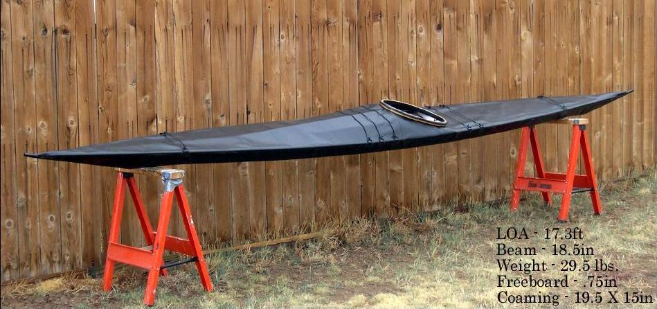

| Sea Rover | Menu Previous Page Next Page |
|
 This black Sea Rover "rolling" folder is 17.3ft X 18.5in ( 527 X 47cm) has a lightweight wood coaming of 19.5 X 15n (49.5 X 38cm) and weighs 30 lbs (13.6kg). Though approximately the same length and only 1in. (2.5cm) narrower than the Sea Ranger, it is visually a much smaller looking kayak. The Masik ,Cross section 4, is rounded and there are additional deck tubes for a more traditional "Greenland" look. Here is the method used to attach the Wood / Freestanding Coaming. Use the (BACK) key to return. |
|